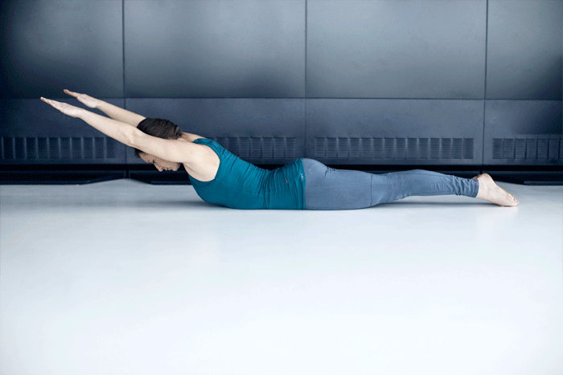
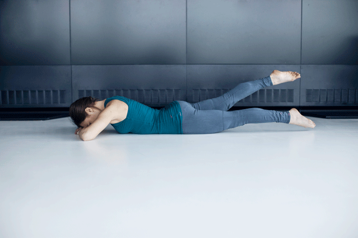
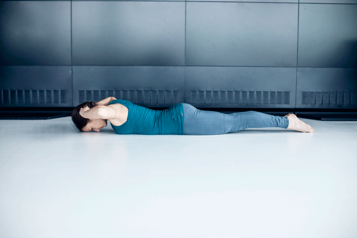
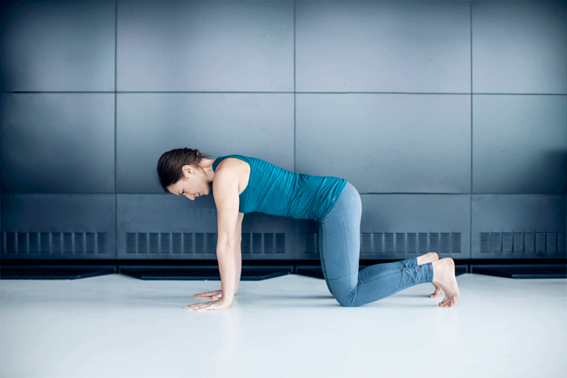
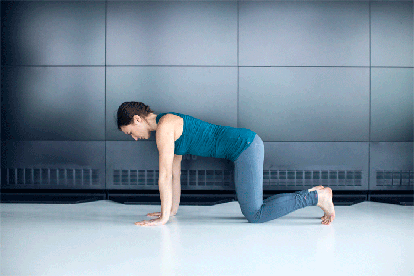

Оставьте нам свои контактные данные и мы перезвоним
Вам перезвонят в течение 10 минут для уточнения деталей установки светильника.
 +380985554433
+380985554433
Самое вредное для позвоночника — это сидеть. Особенно сидеть, наклонившись вперед. А теперь подумайте, что обычный человек проводит в таком положении весь рабочий день, а это примерно 8 часов. Наша спина страдает, но при этом не получает должного ухода. Чтобы укрепить мышцы спины, улучшить осанку и нормализовать дыхание, необходимо выполнять специальные упражнения.
Лягте на живот и оторвите туловище от пола. Вытяните руки вперед, разведите в стороны и опустите вдоль туловища. Старайтесь в этом положении максимально сводить лопатки и не напрягать лицо. Повторите 12 раз.
Остаемся в положении лежа на животе. Теперь положите голову на предплечья. Поочередно поднимайте прямые ноги вверх, напрягая ягодицы. Будьте осторожны: в пояснице не должно быть дискомфорта.
Лягте на живот и заведите руки за голову. Одновременно поднимайте туловище и ноги. Старайтесь делать это как можно выше. Повторите 12 раз.
Станьте на четвереньки, руки выпрямлены, а ноги согнуты под прямым углом. Сделайте вдох и округлите спину, расслабьте шейный отдел и опустите голову. Заметьте, что нужно работать грудным отделом, а не поясницей. Выдохните и раскройте грудной отдел, прогнувшись в позвоночнике. При этом нужно тянуться макушкой к потолку. Сделайте 12 повторений.
Встаньте на четвереньки, ноги и руки на ширине плеч. Медленно вытяните вперед правую руку, а левую ногу отведите назад. Удерживайте эту позицию несколько секунд. Затем дотянитесь правым локтем до левого колена, при этом округляйте спину. Сделайте по 10 раз для каждой стороны.
Выполняйте эту тренировку каждый день, и ваше самочувствие значительно улучшится.
Вам перезвонят в течение 10 минут для уточнения деталей установки светильника.
+380985554433